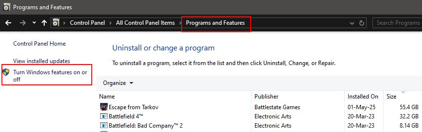
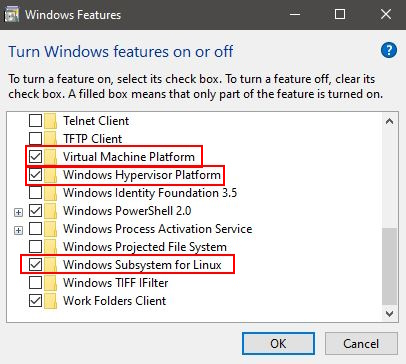
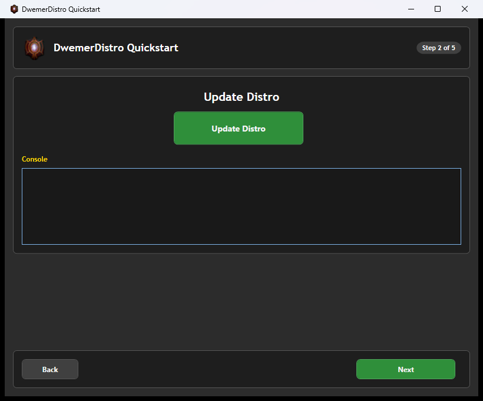
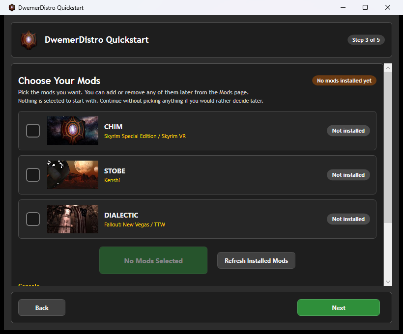
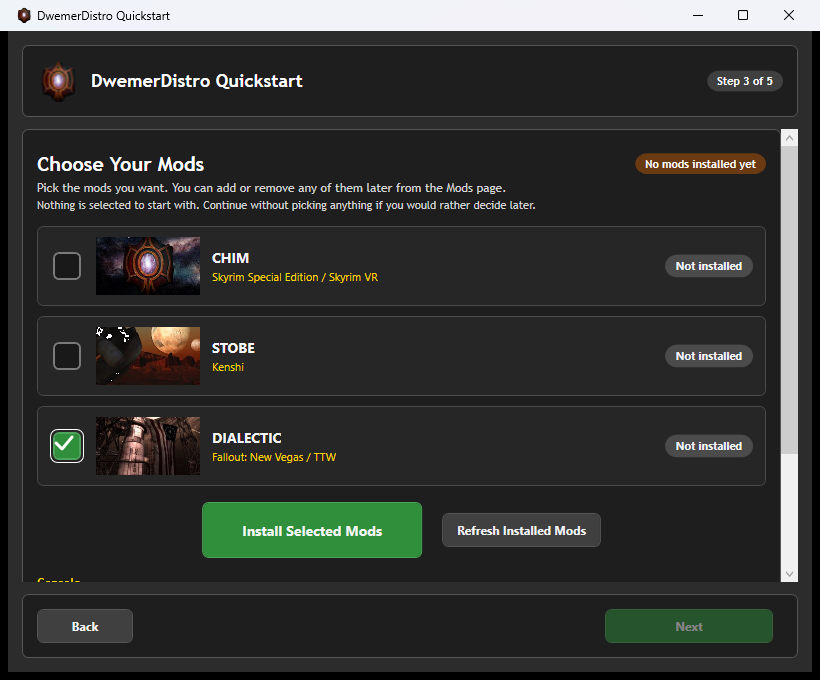
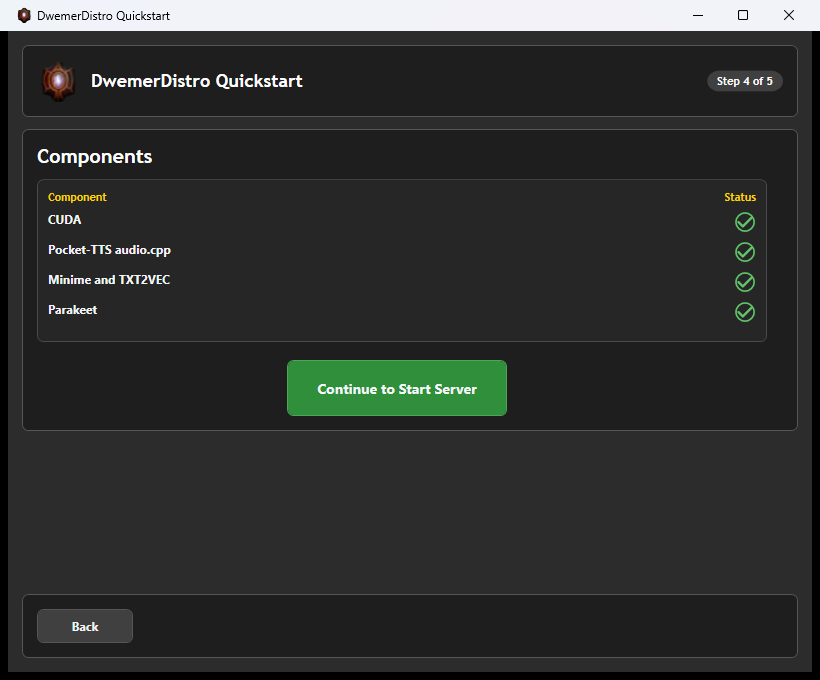
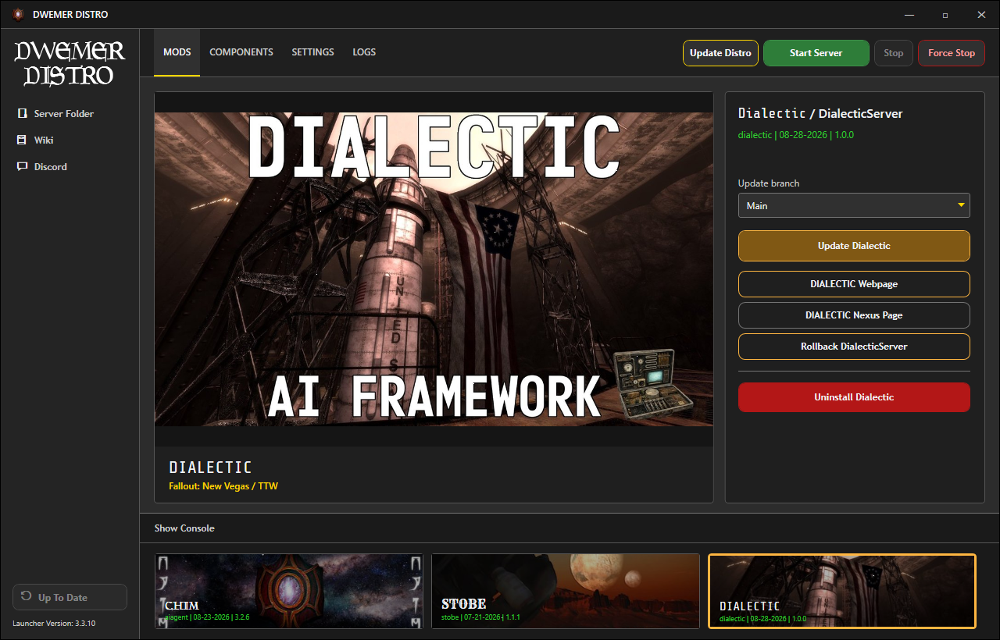
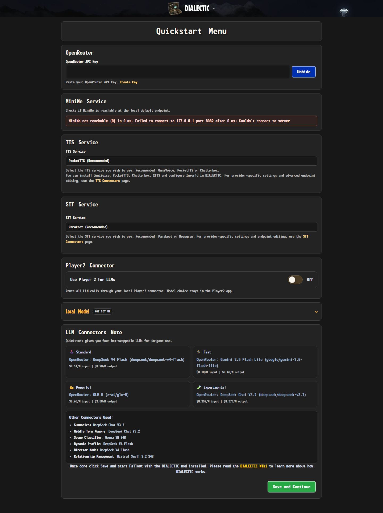

Dialectic Installation
Open the installation video on YouTube
This guide installs DialecticServer through DwemerDistro and the Dialectic game mod through Mod Organizer 2.
Dialectic 1.0.0 is released on Nexus Mods. Download its archives there, then install them with Mod Organizer 2.
Download: Get the current Dialectic archives from Dialectic on Nexus Mods. The main archive and the separate Custom INI archive are both listed there.
Installing DwemerDistro
- Enable virtualization in your PC BIOS.
- Open Control Panel - Programs and Features - Turn Windows features on or off.
- Enable Virtual Machine Platform, Windows Hypervisor Platform, and Windows Subsystem for Linux.
- Restart your PC.
- Run the DwemerDistro installer and leave Create desktop shortcut enabled.


Set Up Dialectic in DwemerDistro
- Open the DwemerDistro launcher.
- On Quickstart Step 2, click Update Distro.
- Wait for the update to finish, then click Next.

- Step 3 opens with no mods selected.
- Select Dialectic, then click Install Selected Mods.
- Wait for Dialectic to finish installing before continuing.


- Step 4 lists the components detected by DwemerDistro.
- Review the green status checks, then click Continue to Start Server.

Recommended first setup: OpenRouter for the LLM, PocketTTS or Chatterbox for voice, and Parakeet for microphone speech-to-text. OpenRouter is optional.
PocketTTS and Chatterbox require accepting their model terms on Hugging Face before installation.
Open DialecticServer
- After Quickstart finishes, select Dialectic on the launcher Mods page.
- Click DIALECTIC Webpage to open the server website.
- If the server is stopped, confirm the prompt to start it first.

Dialectic Web Quickstart
A new DialecticServer install opens Quickstart when you first visit its webpage.
- Enter an OpenRouter API key, or enable the local Player2 connector.
- Select a text-to-speech connector.
- Leave Parakeet selected for local speech-to-text, or configure Deepgram.
- Review the Standard, Fast, Powerful, and Experimental model presets.
- Click Save and Continue.

To use another provider directly, finish Quickstart and follow Use Your Own LLM Provider.
Your player name is detected automatically when Fallout telemetry first reaches the server.
Required Fallout Mods
JIP LN NVSE Plugin 57 or newer
JohnnyGuitar NVSE 5.17 or newer
UIO - User Interface Organizer
Microsoft Visual C++ 2015-2022 Redistributable (x86)
The x86 package is required because Fallout: New Vegas is a 32-bit game, even on 64-bit Windows.
Optional: SUP NVSE 8.55 or newer. It is only required for PipVision and is not needed for dialogue, voices, or actions.
Install Dialectic
- Download the main Dialectic archive and the Custom INI archive from Nexus Mods.
- Install the main Dialectic archive first as its own mod in Mod Organizer 2.
- Install the Custom INI archive as a separate Mod Organizer 2 mod, placed after Dialectic so it wins the conflict.
- Enable
Dialectic.espin the right-hand plugin list. - Keep Dialectic late enough in the left-hand mod order that its own DLL, scripts, MCM files, and interface files are not overwritten.
Fallout: New Vegas is required. Tale of Two Wastelands is supported but is not a master requirement for Dialectic.esp.
User settings belong in Data/NVSE/Plugins/dialectic_custom.ini. Keeping that file in the separate Custom INI mod is what stops a later update of the main archive from replacing your personal settings.
Optional Downloads
The Dialectic Nexus Mods page can also offer extras. None of them are needed for the core installation.
- Herika follower: an optional companion you can add to a playthrough.
- Biography CSV samples: optional example biography data for the biography CSV format.
Check the page's Files section for what is currently available, then install any extra as its own Mod Organizer 2 mod.
First Launch
- Start the game through xNVSE in Mod Organizer 2.
- Open MCM and select Dialectic.
- Bind Chatbox or Voice Chat. Hotkeys are unbound by default.
- Load a save, look at a valid nearby NPC, and use the bound input.
- Confirm the player line and NPC response appear in the DialecticServer Events & Memories page.
If the MCM is missing or no response arrives, continue to the log files and debugging guide.
Updating
Use the Update Dialectic button on the launcher Mods page for DialecticServer updates.
For the game mod, download the latest main archive from Nexus Mods and install it over the existing Dialectic mod.
Leave the separate Custom INI mod in place during a normal update so your dialectic_custom.ini settings survive. Only reinstall it if the Nexus page says the Custom INI archive itself changed. The server and game plugin should remain on matching release versions.